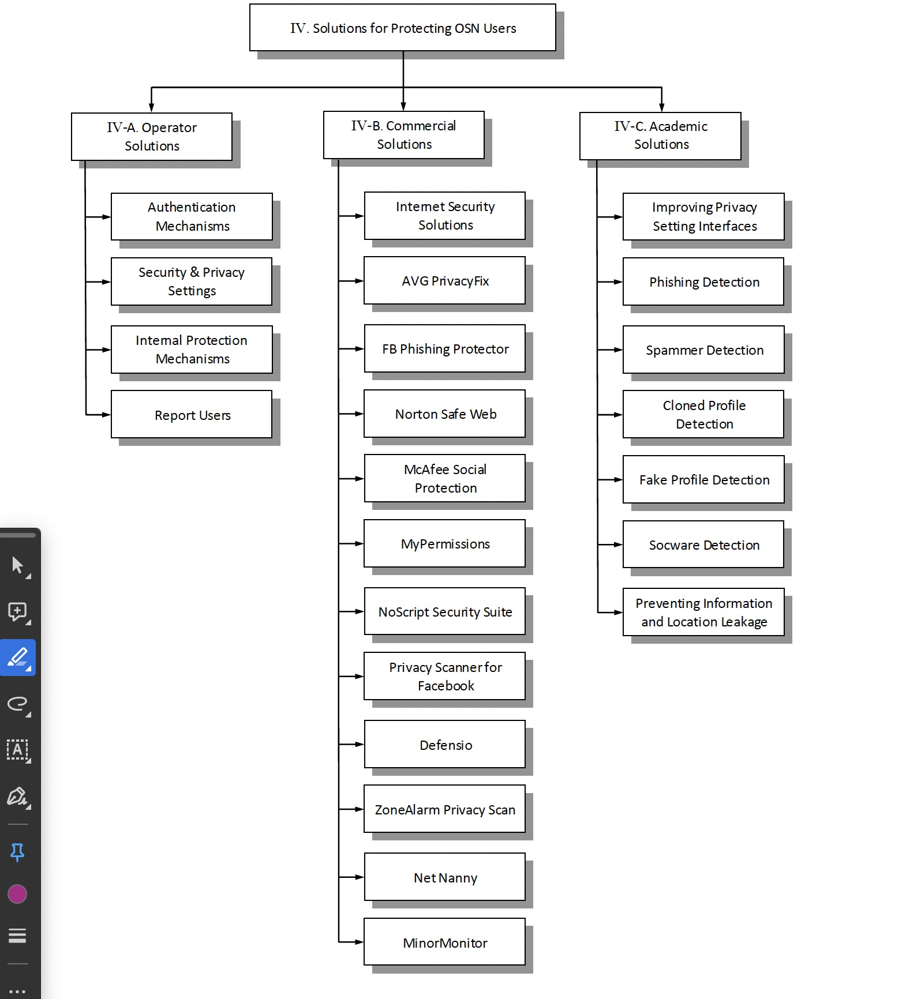

In the digital age, social media systems have transcended mere conversation channels, evolving into pivotal factors of our daily lives. They serve as arenas for social interaction, expert networking, political discourse, and a plethora of other sports that embody the contemporary human experience. However, the expansive reach and deeply incorporated nature of these platforms in both private and professional spheres have given rise to a complex web of vulnerabilities and threats. These risks not only compromise the security and privacy of individual users but also pose considerable challenges to businesses worldwide. The dual-edged nature of social media, as both a tool for unprecedented connectivity and potential vector for cyber threats, necessitates a comprehensive examination. This project aims to delve into the plethora of vulnerabilities inherent to social media platforms, exploring how they can be exploited by malicious actors to undermine the security, privacy, and economic stability of individuals and organizations alike. Through an analytical lens, this project will shed light on social media threats, identifying key vulnerabilities, and analyzing real-world incidents that highlight the urgent need for robust cybersecurity measures. In doing so, it seeks to contribute to the ongoing dialogue on digital security, providing insights that might guide the development of more resilient social media environments and inform users about the importance of vigilance in the digital realm.
Online Social Networks (OSNs) are vulnerable to a range of threats that individuals and organizations alike may face. Information leakage is a primary concern, often occurring when users inadvertently click on unrecognized links that can lead to malicious sites or phishing attempts. How many of us have quickly glanced at our messages only to find a friend request or a casual 'hey' from someone we don't know? These days, attackers have become remarkably crafty, masquerading as harmless contacts. They carefully craft messages that are not just convincing but downright tempting to click on, which, let’s face it, can land us in a heap of trouble. Those mysterious links are like digital Trojan horses, potentially unleashing havoc on our devices and private information. During my research for this project, I stumbled upon an article titled "Online Social Networks: Threats and Solutions" [1]. The authors took the liberty of breaking down the threats into categories, and I would like to share with you how these threats affect social networks.
Phishing Attacks: In recent years, there has been a significant surge in phishing attempts within online social networks (OSNs). According to a report from Microsoft Security Intelligence, a staggering 84.5 percent of all phishing attacks are aimed at users of social networking sites.
Spammers: Spammers on online social networks (OSNs) exploit the platform to distribute advertisement messages to other users, often by fabricating fake profiles. Additionally, they employ another tactic by posting comment messages on pages that attract high visibility among numerous users within the network.
Cross-Site Scripting (XSS): Online social networks, like any other application, can fall victim to Cross-Site Scripting (XSS) attacks. Attackers exploit these vulnerabilities along with the network's infrastructure to develop XSS worms. These worms can then spread quickly among users, creating a viral effect within the social network.
Internet Fraud: Scammers have shifted their focus to online social networks (OSNs) to build trust connections with their victims by infiltrating their online profiles. They exploit the personal information disclosed in these profiles to their advantage.
De-anonymization Attacks: De-anonymization attacks employ various techniques such as tracking cookies, analyzing network topology, and studying user group memberships to reveal the true identity of users.
Face Recognition: Facial recognition technology can affect OSN users by compromising their privacy through unauthorized tagging, exposing them to potential misuse of personal information, and increasing the risk of identity theft or targeted advertising.
Location Leakage: With the rise in the usage of smart mobile devices that actively encourage the sharing of location information, many individuals are willingly disclosing private and sometimes sensitive details about their current or future whereabouts on online social networks.
Fake Profiles: Many times, fake profiles are utilized to harvest users' personal data from social networks. These fake profiles send friend requests to other users within the online social network. Given that users often accept such requests, socialbots can then gather a user's private data, which ideally should only be accessible to their confirmed friends.
Socware: Socware might entice victims by promising fake rewards to users who install socware-related malicious Facebook applications or visit questionable socware websites.
Social media platforms provide organizations with tons of benefits such as connecting with customers, selling their products, and providing superior customer service. However, there’s a flip side to that as well. These platforms can be the breeding ground for all sorts of problems. Consider data breaches, privacy concerns, and widespread misinformation. With so many people using social media, bad things can spread like wildfire, especially when both bots and employees are involved. This can seriously damage the company’s reputation. And let’s not forget those hackers who are always looking for juicy information. Social media is filled with sensitive information such as customer data and trade secrets, making it a gold mine for cybercriminals. When a breach occurs, it’s not just data loss; it’s about getting into legal trouble, ruining your rep, and taking a hit financially.
Online social networks provide numerous tools to keep users secure. They've got privacy settings and authentication techniques in place, like two-factor authentication (2FA) and CAPTCHA, to protect both individuals and organizations. With 2FA, for example, you have that extra layer of security where you need separate forms of ID to access your account, making it harder for threats to sneak in. But it's not just about what the platforms offer; it's also about how users handle their own security. Being aware of what information you're sharing is key. You don't want to accidentally disclose sensitive information that could attract hackers. Clicking on suspicious links could open the door to trouble. So, while the platforms do their part, users need to stay vigilant too. It's a team effort to keep the online world a safer place for everyone.
